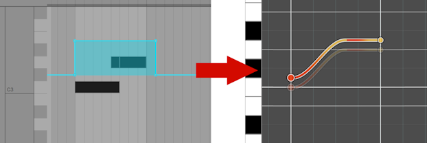
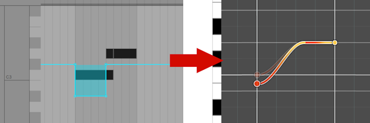
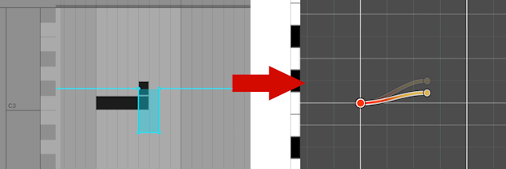
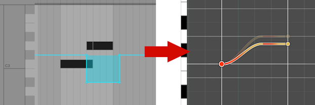
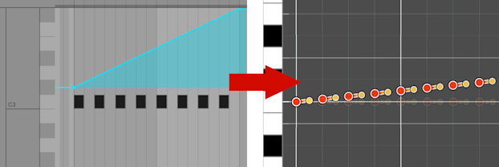

Trombone Champ Chart Converter
Metadata
- Song info -
i i i i i i- Chart info -
i i i i i- Other -
i i iPreview
About
Converts a midi file (.mid) into a TrombLoader chart.
Most of the instructions for how to make a chart are on the Trombone Champ modding Discord:
https://discord.gg/KVzKRsbetJ
Usage:
- Upload the midi above.
-
Fill out the form
- All fields must be filled in, except Song Endpoint
- Use whole numbers whenever possible: Decimals are not guaranteed to work
- Hover over the names of each field to see detailed info
- Click Generate Chart. The result will be downloaded as song.tmb
Notes:
- Midi notes should be in the range 47 to 73 to match the game. Any notes outside this range will likely be unplayable.
- Quantize your charts, the game hates unquantized notes.
- Some midi editors use velocity 0 to indicate a note should turn off. This supports that. Don't otherwise set velocity to 0.
- Unlike Midi2TromboneChamp, this squashes all tracks and has no slide track.
Nyx's converter, which I have shamelessly stolen most of the parsing logic from, can be found at
https://github.com/NyxTheShield/Midi2TromboneChamp
Slide modes
TCCC can interpret midi files in two ways to create slide notes. They are not interchangeable: Slides made for tccc mode will likely not convert properly in other converters.
In the below examples, blue notes are midi notes. Note that a vertical gray line in the middle of a midi note indicates that the note is released and pressed again. The green line is the Trombone Champ notes that will be generated.
midi2tc mode
This is the format used by midi2tc.exe. When two notes overlap, the slide will start at the time and pitch of the start of the first note and end at the time and pitch of the start of the second note.
Note starts with a slide:

Multiple slides:

Note ends with a slide: This is not possible in midi2tc slide mode. In midi2tc.exe 0.3.0 and earlier, it can be done by using channel 2.
tccc mode
This is TCCC's own format. When two notes overlap, the slide will start at the time and pitch of the start of the first note and end at the time and pitch of the end of the second note.
Note starts with a slide:

Multiple slides:

Note ends with a slide:

Overlapping more than two notes is undefined behavior in tccc mode. Don't do it.
Pitch Bend Events
TCCC can perform additional adjustments to the pitch of notes using MIDI Pitch Bend events, allowing you to set notes to microtonal values.
- The Pitch Bend Range option controls what range (in semitones) the MIDI events are converted to.
- E.g. At a Pitch Bend Range of 2, a maximum value pitch bend MIDI event will raise/lower the note pitch by 2 semitones.
- Make sure this range matches the range of the DAW output device you used when making the MIDI (e.g. your synth plugin, soundfont player, etc).
- Most default to +-2 semitones, but it varies across devices so it's best to check your setup.
- TCCC takes the pitch bend values at the start and end of a particular note, and shifts the start/end by that amount.
Examples
Pitch bend event covers all notes, so all are shifted up by the same amount (the unadjusted note is shown faded out). Make sure your desired pitch bend finishes after the note end.
Pitch bend event covers just the start of the first note of the slide, so the start is shifted down.
You can shift the start/end of a single-note slide by placing the pitch bend around just the start/end note. In this case the end of the slide is shifted down.
When shifting a note connected to the end of a slide, make sure to shift both the end note and the slide note that connects to it.
For pitch shift gradients/curves, the pitch shift amount is taken at the start and end of each note.
Version history
v1.9b
Fixed an issue where tempo changes were applied at the wrong time
v1.9a
Increased maximum pitch bend range to 12 semitones
v1.9
Added support for tempo changes
v1.8a:
Changed "Song Folder" to "trackRef"
Added option to generate unique trackRef prefix
v1.8:
Added support for converting MIDI pitch bend events into note pitch adjustments
v1.7e:
Added CONTRIBUTING.md to the Github repo, along with test resources
v1.7d:
Added footer and moved contributors there
v1.7c:
Added author
v1.7b:
Fixed an issue where colors with r,g,b values less than 16 would fail to import, unless all were less than 16
v1.7a:
Removed warning when bpm is not a whole number
Added note about multiple overlapping sliders in tccc slider mode
v1.7:
Added slide modes and slide mode info section
Added support for lyrics
Aligned info "icons" better
v1.6a:
Reorganized the code
v1.6:
Added hex color input
Made the preview update when the color is changed
Made info hovers more visible
Restyled tables to now use grids
v1.5b:
Fixed an issue where triplets could fail to connect
v1.5a:
Renamed "measure" to "beat"
v1.5:
Added preview
Switched from vars to only lets and consts
v1.4:
Load the midi eagerly instead of only at generate time
Format warnings better and let users hide them
Changed styling a bit
Split the code into many files
v1.3a:
Added randomly generated folder names to fix a name collision issue
v1.3:
Added metadata importing
Fixed an issue when a note ends at the same time as another starts
Moved warnings to be above the button to make them easier to see
Added placeholder for endpoint input
Changed default note spacing: previously BPM, now 180
v1.2:
Added option to clamp notes
Added warnings for unsnapped notes
Treat midi start-note with velocity 0 as end-note
Added cleanup of object URLs
v1.1:
Renamed from "MIDI to TMB" to "TCCC"
Fixed default colors
Added version history
v1.0:
Initial release